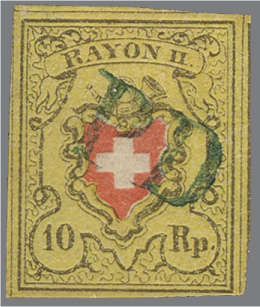
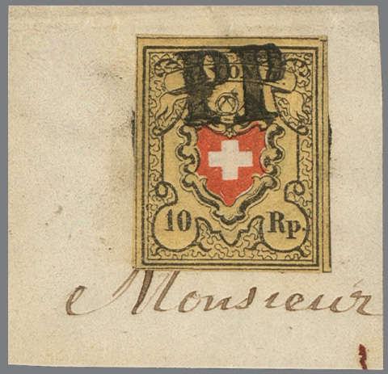
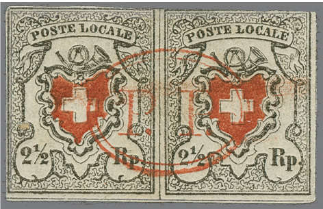
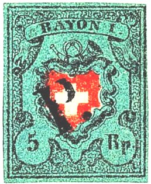
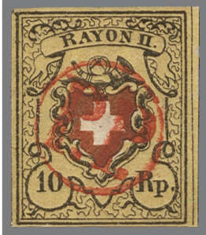
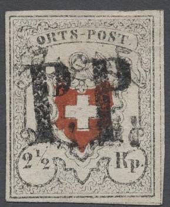
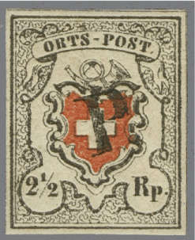
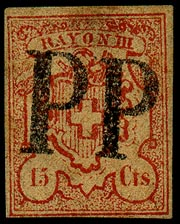

("PP" and "PD")
Return To Catalogue - Switzerland cancels on first federal issues, part 1 - Switzerland overview
Note: on my website many of the
pictures can not be seen! They are of course present in the
catalogue;
contact me if you want to purchase the catalogue
For more examples and an overview see the book of P.Mirabaud and A.De Reuterskiold; 'Les Timbres-Poste Suisses 1843-1862'. Upon the introduction of the federal stamps (5 April 1850), the prescribed cancellation was to apply a namecancel (town name usually in a straight line with or without date) on the envelope, accompagnied by a penstroke in black (obliteration a la plume). Although the penstroke was supposed to be black, red penstrokes also exist.
On 9 April 1850, the instruction was changed; instead of a penstroke, the cancel now should consist of a 'PP' cancel, to be applied on each stamp individually. If the postoffice did not have a 'PP' canceller, penstrokes were still allowed. In the next station with a 'PP' cancel, the stamps should still be obliterated with a 'PP' cancel (even though they already had a penstroke). There are quite a number of different 'PP' cancels, applied in black, blue, red or green.
On 22 October 1850, this instruction was changed again. From now on, any 'PP', 'PD', 'Franco' or any cancel at the post office dispostion could be used. This should be applied in the color black.
The grille cancel was introduced in 1854 and used upto half of 1857. These were used to cancel the stamps, while usually a date cancel was placed elsewhere on the letter. From 1857 this date cancel was used once only for both the stamps and letter.
For mor Switzerland cancels on first federal issues, part 1, click here.
Some typical "PP", "PD", "P" etc, cancels:
Many different 'PP' 'Port Paye' , 'PD' 'Paye jusqu'a la Destination', 'P' (on letters to France?), 'RL' (Rayon Limotrophe), 'PF' (paye jusqu'a la frontiere) cancels exist, examples:
("PP" and "PD")

Blue "P.P." cancel of Solothurn

Red "P.P." cancel from Bischoffszell.

A "P.P." cancel from Olten.

"P P" cancel from Orsieres.


"P.D." cancel of Bern; also in blue.

Blue and red "PD" cancel from Fribourg.

"P.D" cancel from Payerne.

"P.D" cancel from Lausanne.

"PD" from Sion.

"PD" from Nyon.

"PP" cancel of Martigny

"PP." in box cancel of Bern


Other "PP." in a box cancels. The cantons of Bern and
Basel used this type of cancels.

"PP." in box from Liestal.

"PP." in a rounded box cancel of Cressier.

"PP" in a larger red box from Geneva.


Slanting "P.D." from Roveredo in black and
blue.

Small slanting "P.D." from Lenzburg.

Red double ellipse with "P.P." from Fribourg


"P.P." in a large double-lined oval, probably from
Olten.


"PP" in a large ellipse with ornaments under
"PP", cancel of Tessino

"P." cancel from Bern.


Neuchatel (Neuenburg) "PP" in a circle

"PP" in a circle from Aarau.

"PP" in a circle from Meiringen.


Black and red "PP" in a circle from Basel.

"PP" in a circle from Schwarzenburg.

"PP" in a circle from Saint-Blaise.

"P.P." cancel from Couvet.


Red "P.P." in a circle from Romont.

"PF" in a circle cancel.


Red "PD" in a circle cancel from Geneva. Next to it the
same cancel in black.


"PP" cancel from Luzern


"P.P." cancel of St.Gallen.


"P.P." cancel from Zurich.


"PP" cancel from Schwyz

Small "PP" cancel from Airolo.


"P.P." cancel from Baden.


"PD." slanting in a rectangle.

"PD" in an oval.

Red "P.P." cancel from Bischoffszell.


"PP" in a rectangle of La Sarraz and Sierre

"P.P" from Locarno?

"P." cancel of Unterseen.

Slanting "P.P." in a fancy box of Tessin.

{kind=link}
{kind=link}
{kind=link}
{kind=link}
{kind=link}
{kind=link}
{kind=link}